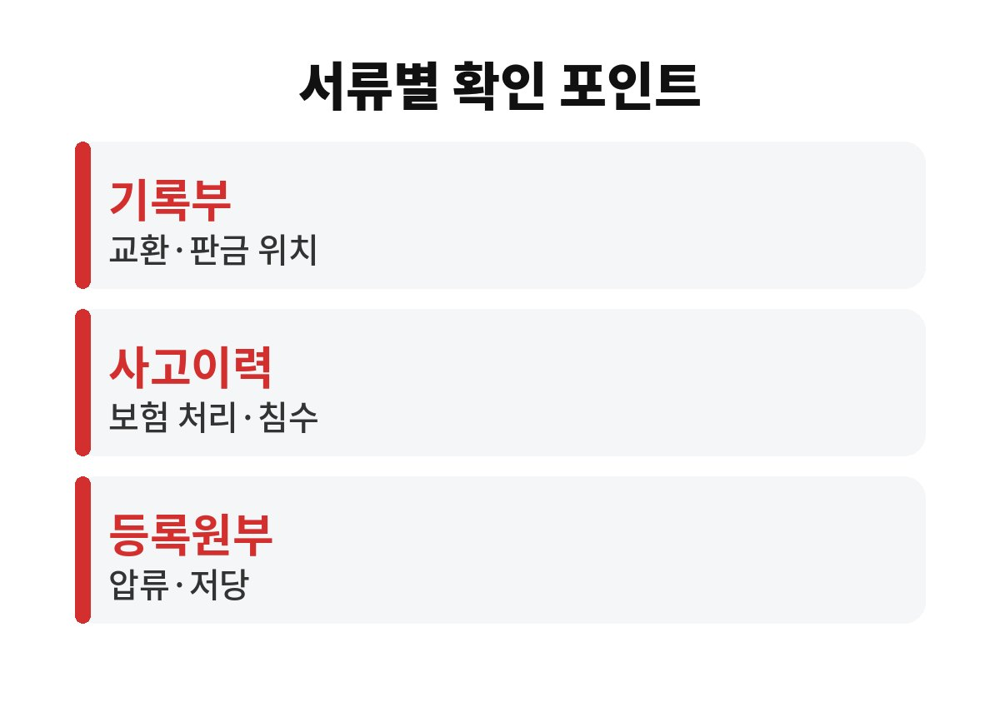
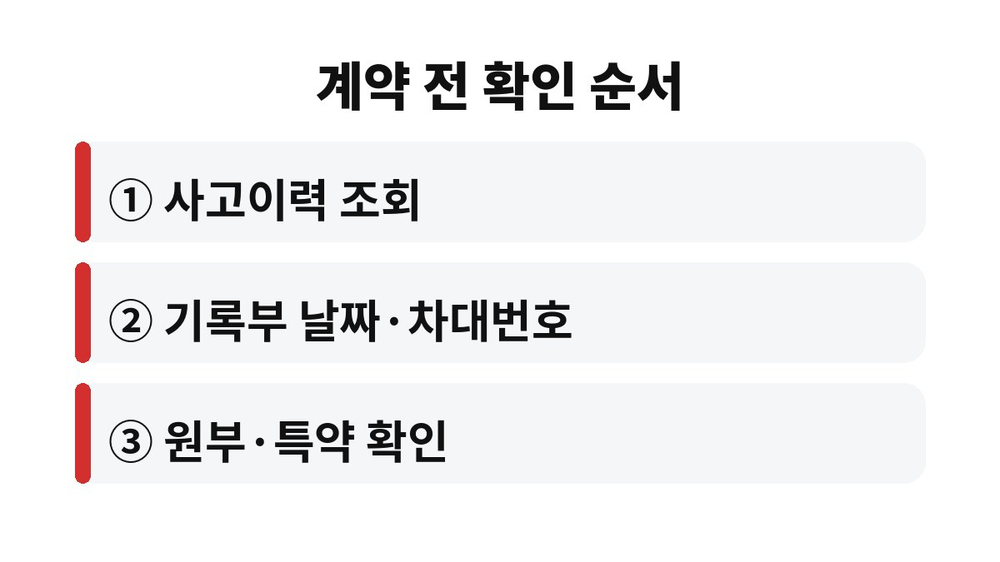

중고차 성능점검기록부는 판매 직전 차 상태를 점검자가 눈으로 확인한 서류이고, 사고이력 조회는 과거에 보험으로 처리된 사고를 보여 주는 기록이라 둘은 서로의 빈 곳을 메운다.
한쪽만 보고 계약하면 다른 쪽에만 드러나는 흠을 놓친다.
중고차를 살 때는 이 두 가지에 자동차등록원부까지 세 서류를 나란히 놓고 본다.
세 서류는 만들어지는 곳도, 보여 주는 시점도 다르다.
아래처럼 나눠 보면 어느 칸이 비는지 보인다.
| 서류 | 보여 주는 것 | 놓치기 쉬운 부분 |
|---|---|---|
| 성능·상태점검기록부 | 점검 시점의 외판·골격 교환과 판금, 주요 장치 상태 | 점검자가 확인한 범위에 한정 |
| 보험개발원 사고이력 조회 | 보험 처리된 사고와 수리비, 침수·전손 처리 여부 | 보험 없이 자비로 고친 사고는 빠짐 |
| 자동차등록원부 | 소유자 변경, 압류·저당 설정 | 차 상태는 알 수 없음 |

나는 이 표를 만들어 보고 나서야 사고이력이 깨끗한 차도 기록부에는 판금 표시가 있을 수 있다는 걸 이해했다.
보험 처리 없이 고친 사고는 조회에 남지 않기 때문이다.
매매업자는 중고차 성능점검기록부를 매수인에게 내주고 설명해야 한다.
기록부는 점검일로부터 120일 이내의 것이어야 하고, 점검자 정보와 판매자 서명이 있는지 본다.
자동차관리법 시행규칙은 점검 내용과 실제 상태가 다를 때에 대비해 인도일로부터 30일 이상 또는 주행거리 2,000km 이상의 보증 기간을 두도록 했다.
계약서에 이 보증 기간이 적혀 있는지도 같이 본다.
직거래는 매매업자의 고지 의무가 적용되지 않아 기록부가 아예 없는 경우가 많다.
이럴 때는 차량번호로 사고이력 조회를 직접 하고, 계약 전에 정비소 점검을 받겠다고 미리 말해 둔다.
명의자 본인이 직접 나오는지, 등록증의 소유자 이름과 신분증이 같은지도 거래 당일에 맞춰 본다.
이 요청을 꺼리는 판매자라면 그 반응 자체가 판단 근거가 된다.
장마와 태풍이 지난 뒤에 나온 매물은 침수 여부부터 본다.
보험으로 처리된 침수는 조회에 남지만, 보험 처리를 하지 않은 침수차는 기록이 없을 수 있다.
그래서 서류와 함께 안전벨트를 끝까지 당겨 끝부분에 진흙이나 얼룩이 있는지, 바닥 매트 아래에 녹이 있는지 손으로 확인한다.
기록부의 차체 그림에는 교환을 뜻하는 X, 판금이나 용접을 뜻하는 W 같은 기호가 표시된다.
문이나 펜더 같은 외판 교환은 비교적 흔하다.
하지만 필러, 휠하우스, 사이드멤버 같은 골격 부위에 표시가 있으면 사고 규모가 컸다는 뜻이라 가격과 상태를 다시 따져 본다.
같은 기호라도 부위에 따라 무게가 전혀 다르다.
주행거리 칸은 계기판 숫자와 직접 비교한다.
자동차365에서 정기검사 때 기록된 주행거리를 보면 해마다 숫자가 자연스럽게 늘었는지 확인할 수 있다.

이 순서대로 보면 한 시간 남짓 걸린다.
서류만으로 다 알 수는 없어서, 마음에 드는 차라면 정비소 점검 비용은 아깝지 않다고 나는 판단했다.
인수 뒤에 기록부와 다른 고장이 나오면 보증 기간 안에 매매업자와 점검자에게 바로 알리고, 수리 전에 사진과 정비 견적서를 남겨 둔다.
책임을 두고 다툼이 생기면 한국소비자원 상담을 받아 보는 게 빠르다.
차를 고른 다음에는 보험 가입과 이전등록 기한을 미리 확인해 두면 인수 당일이 덜 바쁘다.
참고 자료: 국토교통부 「중고자동차 성능·상태 점검 Q&A」(2026년 11월 확인)
※ 2026년 기준 공공기관 안내를 바탕으로 정리한 글이며, 차종과 연식에 따라 기준이 다를 수 있어 차량 설명서와 공식 안내를 함께 확인하길 바란다.